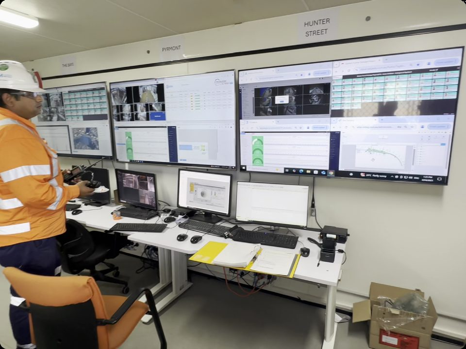
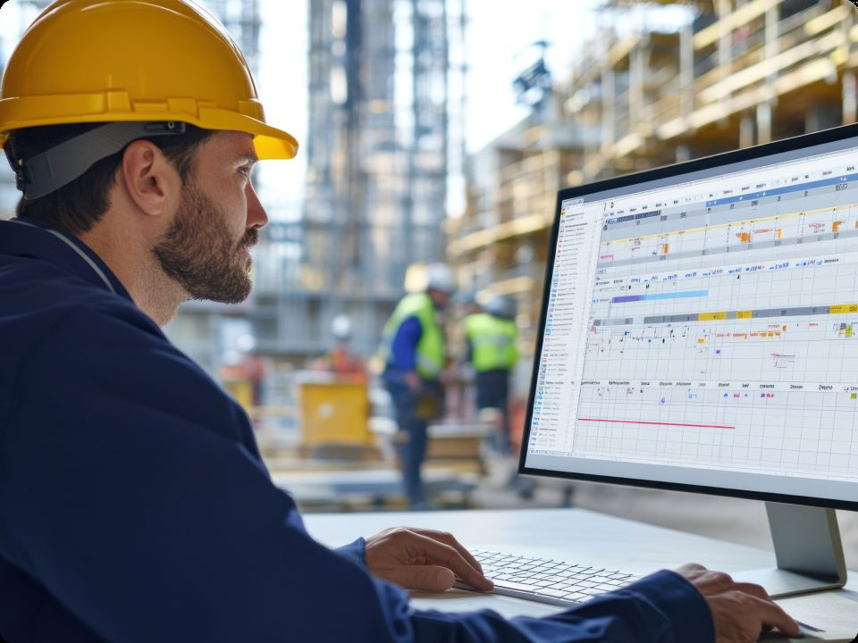
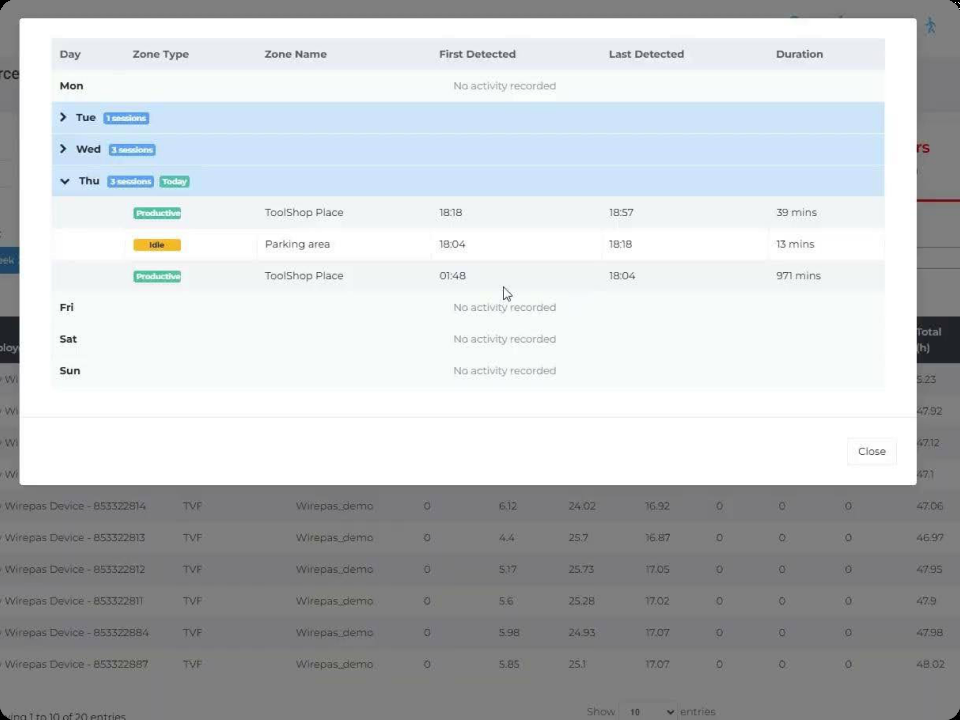
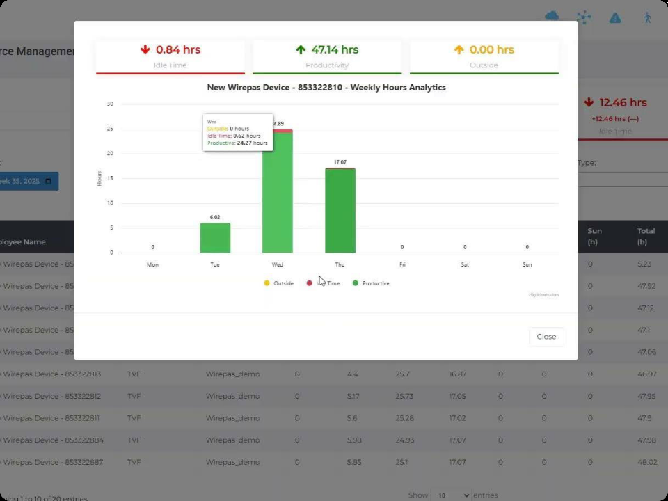
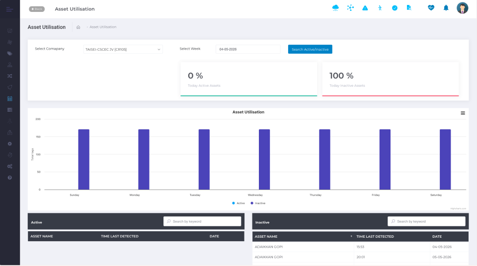

Asset & Supply Chain Visibility
Asset & Materials Intelligence
Manage the complete lifecycle of every asset, material and critical resource.
Modern projects involve millions of dollars of equipment, materials and critical assets moving between suppliers, warehouses, laydown areas, workshops, vehicles and active work fronts. Without complete visibility, organisations lose valuable time searching for assets, coordinating deliveries, verifying installations and understanding resource availability.
iottag creates a live Operational Digital Twin of your assets and materials, providing complete visibility from supplier to site, through construction, operation and ongoing maintenance.
Complete Asset Visibility
Across Your Operation
Enterprise asset management is about more than knowing where equipment is located. It is about understanding how every asset supports operational performance.
Whether tracking tools, heavy equipment, temporary infrastructure, mobile assets or critical plant, iottag provides a live operational view of asset location, movement, availability, utilisation and ownership across the entire project. Teams can instantly identify where resources are located, who is responsible for them and whether they are available for work, reducing delays caused by misplaced equipment and improving coordination across large operational environments.


Enterprise Asset Utilisation &
Operational Readiness
Knowing where an asset is located is only part of the picture. Understanding how effectively it is being used allows organisations to improve productivity and reduce unnecessary capital expenditure.
iottag continuously measures asset utilisation, movement patterns, idle time and operational availability, helping maintenance, procurement and operations teams understand whether equipment is fully utilised, underused or unavailable when required. Historical utilisation data supports better maintenance planning, fleet optimisation and more informed procurement decisions.
Supply Chain & Site-Wide Materials Tracking
From the moment materials leave the manufacturer through to final installation, iottag provides complete visibility across the supply chain.
Working alongside OEMs, manufacturers and suppliers, iottag establishes a complete identification and tracking framework by ensuring components are labelled before arriving on site. As deliveries arrive, fixed scanning infrastructure, vehicle gantries and handheld readers automatically record every shipment, verifying deliveries against Bills of Materials (BOMs) and project requirements.
As materials move between laydown areas, warehouses, tool sheds, fabrication facilities and underground assembly workshops, every transfer is recorded, maintaining accurate custodian records and complete chain of custody throughout the project lifecycle.

The platform automatically identifies missing components, incomplete deliveries and assets that have not reached their intended destination, generating exclusion reports that enable teams to resolve issues before they impact construction activities.
For assembled equipment, iottag maintains complete digital records linking every component used to build the final asset, creating a permanent digital history that supports commissioning, maintenance, compliance and future asset management.
High-Value Asset & Toolshed Management
Large projects depend on thousands of shared tools and high-value assets being available exactly when they are needed.
iottag automates tool issue and return processes through connected tool sheds, enabling workers to quickly check equipment in and out while maintaining complete custodian records. Operations teams can instantly see who has each asset, where it is located and how long it has been in use, significantly reducing lost tools, unnecessary purchases and time spent searching for equipment.


Site-wide detection infrastructure continuously monitors the movement of valuable assets, helping ensure equipment remains within authorised work areas while identifying misplaced assets, unauthorised removals or equipment that has not been returned.
Historical utilisation and dwell-time reporting provides procurement teams with valuable insight into actual equipment demand, helping optimise fleet sizes and reduce unnecessary capital expenditure.
During shutdowns and major maintenance activities, where tool availability directly impacts productivity, iottag ensures critical equipment is available where it is needed, preventing delays caused by missing or hoarded assets.
Asset Intelligence Within the Operational Digital Twin
Assets never operate in isolation. Equipment, materials and resources directly influence workforce activity, production performance, logistics, maintenance planning & operational safety.
Workforce Activity
Production Performance
Logistics
Maintenance Planning
Operational
By connecting enterprise asset intelligence into the Operational Digital Twin, organisations gain a complete understanding of how resources interact with people, vehicles and operational workflows, enabling faster decisions and more efficient project delivery.
Transform Asset Visibility Into Operational Intelligence
Connect your assets, materials, tools and supply chain into Operational Intelligence to improve utilisation, reduces delays and provides complete visibility across your operation.